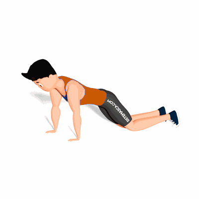

Prancha Alta com Joelho e Toque nos Ombros

O exercício trabalha a resistência e estabilidade da lombar, como também irá fortalecer os músculos do abdômen.
Ficha Técnica
Tipo: Funcional
Grupo Muscular: Abdome
Aparelho: Nenhum
Músculos: Nenhum
Como realizar
- Coloque-se na posição de flexão, com os braços abaixo dos ombros;
- Flexione os joelhos e apoie ele a ponta dos pés no solo;
- Permaneça o mais equilibrado possível, tire uma mão do chão e toque a frente do ombro oposto;
- Retorne a mão para o chão e repita os movimentos alternando as mãos.
 RC STORE
RC STORE